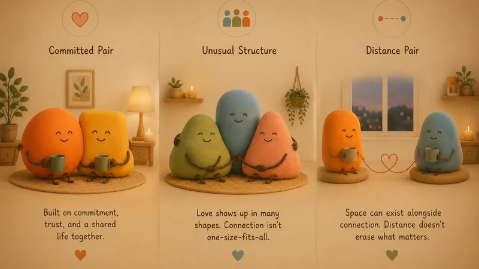

Somebody right now is lying awake next to a person they've seen every weekend for four months, wondering what they're allowed to call this.
The words matter more than they should. "Seeing each other" and "together" describe the same two people differently, and the gap between those descriptions is where a lot of modern heartache lives. So here is the full vocabulary: every common type of relationship, defined plainly, with what each one actually asks of the people inside it.
No type on this list is the correct one. The correct one is the one both people actually agreed to.
Why the words matter
Labels get mocked as overthinking, but a relationship type is really just a bundle of expectations: who else is allowed, what the future implies, who gets called from the hospital. When two people share a label, the expectations are synced. When the label lives in only one head, someone is following rules the other person never signed.
Most relationship pain is not betrayal. It is two people honoring two different unspoken contracts.
Types by commitment level
Situationship. Relationship behavior, no relationship definition. Regular time, real intimacy, daily texts, and a careful mutual silence about what it is. It asks almost nothing officially, which is the appeal and the trap: fine when both people genuinely want it light, corrosive when one is privately waiting for a promotion.
Casual dating. Openly unserious: you are dating, possibly among other people, and both of you know it. The honest version requires one brave sentence early ("I'm not looking for serious right now") and the decency to repeat it if the other person's eyes say otherwise.
Exclusive dating. The first real contract: just us, but not yet forever. This is the type where habits form, so it quietly matters most. The patterns you build here, how you argue, how you repair, how honest you can afford to be, tend to become the marriage's blueprint if you get that far.
Committed relationship. Exclusive plus future tense. Plans assume each other. It asks for the full toolkit: repair skills, hard conversations, and the daily maintenance we cover in what a healthy relationship actually looks like.
Engagement and marriage. The contract goes public and, in marriage's case, legal. What it asks is less romantic than the photos suggest: the skills of staying, through the boring seasons and the hard ones.

Types by structure
Monogamy. One romantic and physical partner at a time, the default in most cultures and the majority choice everywhere. Less discussed: it works best treated as a continuing choice rather than an automatic setting. We gave it its own guide.
Open relationship. A committed couple at the center, with agreed-upon room for physical connections outside it. The operative word is agreed: the openness has rules, and the rules are the relationship.
Polyamory and other consensual non-monogamy. Structures where partners agree, openly, to more than one relationship or connection. They exist, they have their own vocabulary, and the defining requirement across all of them is that everyone involved knows and agreed. They are not our focus here; this site is written for two people building one relationship.

Something small is in the works
We're quietly making something for the two of you. Leave your email and we'll surprise you when it's ready.
No spam, no newsletter. One good email when it’s ready.
Types by circumstance
Long distance. Any of the above, plus geography. Distance does not change the type; it changes the maintenance, which becomes deliberate or doesn't happen. Our guide to making long distance work covers the rituals that carry it.
Cohabiting. Living together, married or not. What it asks: the unglamorous negotiations (money, chores, family) that the law handles automatically for married couples and cohabiting ones must invent themselves.
Friends with benefits. Friendship plus physical intimacy, minus romance, in theory. The theory has a famous failure rate: the arrangement runs on bonding chemistry while forbidding the bond, and someone usually catches feelings. If you are in one, the kindest rule is honesty at the first sign of change.
Platonic partnership. Deep, primary, non-romantic: queerplatonic relationships, lifelong best friends raising a life together. Rarer in conversation than in reality.
Which type are you in? (and does it match?)
Most relationships are one type from each column: exclusive, monogamous, cohabiting. Committed, polyamorous, long distance. The combinations are nearly endless, and all of them function on the same fuel: both people would describe it the same way.
So the only diagnostic that matters is the scary little question. Not "where is this going", which asks someone to predict the future. Just: what would you call us, right now?
If the answers match, whatever they are, you're fine. If they don't, you just found out early, which beats the alternative by months.
For your next conversation
- "What would you call us, right now, in one word?"
- "What does exclusive mean to you, specifically? I'll go too."
- "Is there anything about our setup you agreed to but never actually wanted?"
The taxonomy will keep growing; the internet mints a new relationship word every few months. Underneath all of them, the machinery never changes.
Two people, one honest description, regularly renewed. Everything else is vocabulary.
Questions couples actually ask
What are the main types of relationships?
By commitment: situationship, casual dating, exclusive dating, committed, engaged, married. By structure: monogamy for most couples, plus various consensual alternatives. By circumstance: long distance, cohabiting, friends with benefits, platonic partnerships. Most relationships are one from each column.
What is a situationship?
A connection with relationship behavior and no relationship definition: regular time together, intimacy, daily texting, and a careful silence about what it is. Fine if both people genuinely prefer it; quietly painful when one person is waiting for it to become something with a name.
How do you know what type of relationship you're in?
You ask, which is famously the hard part. The honest test: would you both give the same answer to "what are we?" If you have never checked, the labels in your two heads may not match, and mismatched labels are where most of the hurt in modern dating comes from.
Can a relationship change types?
Constantly, and healthy ones often do: casual becomes exclusive, long distance closes the distance, dating becomes engaged. The type is a current agreement, not a life sentence. Trouble usually comes from a type changing in one person's head without a conversation.
Something small is in the works
A little surprise for couples is in the works. Be the first to know.
No spam, no newsletter. One good email when it’s ready.